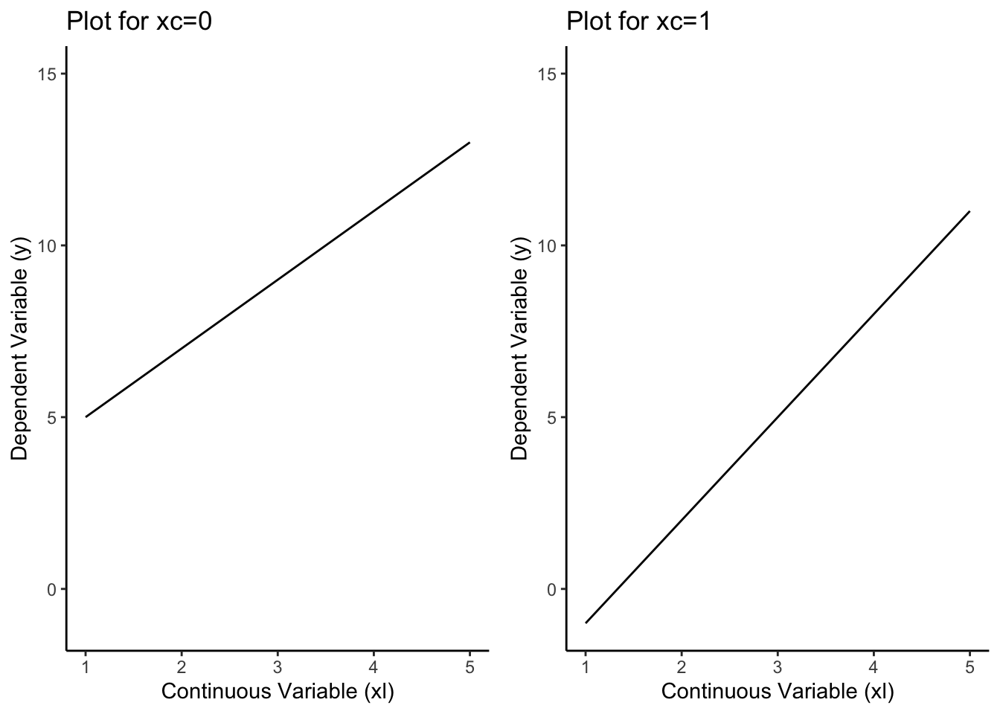
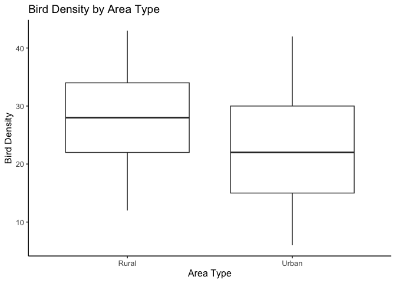
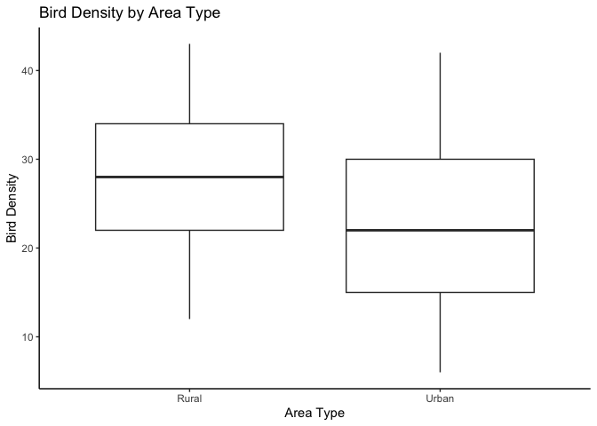
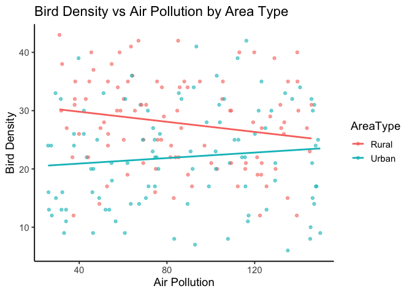

12 Analysis of Covariance (ANCOVA)
ANCOVA uses the same linear model ideas from regression, with one continuous covariate and one categorical factor. We first test whether groups have different slopes with respect to the covariate, then, only if slopes are parallel, we test whether groups differ in adjusted means.
12.1 Linear Models (LMs)
Linear Models are a class of models that encompass various types of statistical analyses, including ANOVA, and regression. They’re flexible enough to handle different types of data and relationships. These assume the response variable is continuous and normally distributed. They include t-tests, ANOVA, regression, and ANCOVA as special cases.
A genera linear model is the common framework that includes ANOVA, regression, and ANCOVA. Each uses the same residual-based logic: a continuous response \(Y\) is modeled as a combination of one or more predictors plus error. We’ve seen a few different cases so far:
- No Groups and No Relationships (H0):
- This scenario often emerges when our ANOVA or regression analysis yields non-significant results.
- What We Report: The grand mean and overall variance or standard deviation. Alternatively, we can use a confidence interval to encapsulate this information.
- Two or More Categories with Significantly Different Means (t-test, ANOVA):
- Here, we delve into data where group means are distinct and significant.
- What We Report: Group means. In classical ANOVA, we might report a common variance or standard deviation, or opt for group-specific measures (potentially through confidence intervals), ensuring to note that variances are not significantly different. With Welch’s t-test, we focus on group-specific variance or standard deviation.
- Two Continuous Variables with a Significant Linear or Monotonic Relationship (Regression):
- This model applies when there’s a significant linear relationship between two continuous variables.
- What We Report: The equation of the regression line, along with its confidence limits. We can also select specific x-values and provide confidence intervals for the predicted y-values at those points.
12.1.1 Model Statements:
- No Groups/Relationships: \(y \sim N(\mu, \sigma^2)\)
- Categories with Different Means: \(y_{i,j} = \mu + \tau_i + \epsilon\) (t-test allows for unequal variance: \(y_{i,j} = \mu + \tau_i + \epsilon_i\))
- Linear Relationship: \(y = \beta_0 + \beta_1x + \epsilon\)
Linear models handle continuous \(y\); for counts or non-Gaussian \(y\), we use generalized linear models (not covered here).
12.1.2 Flexibility and Applicability of LMs
LMs enable us to model more complex relationships beyond the basic categorical X with continuous Y (as in t-tests and ANOVA) or continuous X with continuous Y (as in regression). They can handle diverse data types and model relationships that aren’t strictly linear, making them crucial for studying environmental systems.
So far, in our exploration of parametric tests, we have primarily focused on two types of relationships:
- A categorical X and a continuous Y: This includes tests like the t-test and ANOVA.
- A continuous X and a continuous Y: This is typically analyzed using linear regression.
12.1.3 Understanding ANOVA as a linear model:
ANOVA, or Analysis of Variance, is traditionally viewed as a technique to compare means across multiple groups. However, at its core, ANOVA is a linear model. It’s a special case where the predictors are categorical, not continuous. This distinction is important but subtle.
Example: Imagine a researcher is exploring the effects of metal contamination on the species richness of sessile marine invertebrates. They’re particularly interested in the impact of copper and the orientation of the substrate on which these organisms live. To investigate this, they conduct a factorial experiment, measuring species richness across different levels of copper enrichment (None, Low, High) and substrate orientation (Vertical, Horizontal). This setup allows us to not only consider each factor separately but also examine their potential interaction.
The ANOVA framework provides three null hypotheses to test:
There are no differences in species richness across the copper levels.
There are no differences in species richness between substrate orientations.
There is no interaction effect between copper levels and substrate orientation.
These hypotheses can be represented in a linear model as follows:
\(y_{ijk} = \beta_0 + \beta_{Copper_i} + \beta_{Orientation_j} + \beta_{Copper \times Orientation_{ij}} + \varepsilon_{ijk}\)
Here, \(\beta_0\) is the grand mean (intercept), \(\beta_{Copper_i}\) and \(\beta_{Orientation_j}\) are the main effects of the copper levels and orientation, respectively, and \(\beta_{Copper \times Orientation_{ij}}\) represents the interaction between these factors. The \(\varepsilon_{ijk}\) term captures the residual variance, or the random deviation of each observation from the model prediction. The significance of each beta coefficient is tested to determine if it makes a meaningful contribution to the model.
When conducting an ANOVA, we’re essentially fitting a linear model with categorical predictors. These predictors are represented by beta coefficients in our model, which show the unique contribution of each factor (like copper levels or substrate orientation) to the outcome variable (such as species richness). The critical question we ask is whether each beta coefficient is significant—does it make a meaningful difference to our model?
We test each term with an \(F\)-test. The F-statistic is a ratio that compares the amount of variance explained by a particular factor to the variance not explained by the model (within-group variance or error). A higher F-statistic indicates that the factor explains a significant portion of the variability in the outcome variable, while a lower F-statistic suggests that the factor does not contribute much to our understanding of the outcome variable.
\(F = \frac{MS_{Treatment}}{MS_{Error}}\).
In an ANOVA with two factors, we calculate the F-statistic for each factor and their interaction. Significance is tested with \(F\); interpretation focuses on planned factors and interactions. If \(F\) is significant, we keep the beta coefficient in our model. If not, we may consider omitting it for a simpler model.
It turns out that ANOVAs are just a type of linear model in which the predictor variable is categorical. In practice, we can perform ANOVA using the lm() function in R, treating the categorical predictors as factors. This allows us to use the familiar beta notation and interpret ANOVA as a linear regression model with categorical predictors.
12.2 Moving Beyond Regression and ANOVA to ANCOVA
As we’ve explored statistical modeling, we’ve understood the power of both regression and ANOVA. Now, let’s merge them. ANCOVA allows us to examine relationships across different categories.
Consider these questions that may arise in environmental research:
Are dbh (Diameter at Breast Height) and height related similarly for tulip poplars and oaks?
Are biomass and BTUs (British Thermal Units) related similarly for corn stover and Miscanthus?
Does the exposure to PFAS correlate with the lifetime incidence of cancer uniformly across low- and high-income American populations?
This specific subsection of general linear models is known as Analysis of Covariance – ANCOVA. ANCOVA is a linear model with one continuous covariate and one categorical factor; it tests group differences after adjusting for the covariate and, first, whether slopes differ across groups.
12.2.1 Conceptual Background for ANCOVA
At its core, ANCOVA checks whether groups share the same line or whether each group needs its own slope and intercept. To represent those group-specific lines within a single linear model, we use indicator (dummy) variables. Indicators allow the model to “turn on” shifts in intercept or slope for each group, which is exactly the machinery ANCOVA relies on.
12.3 Dummy (Indicator) Variables and How They Work
Categorical predictors can be included in a linear model by coding them as indicator variables.
For a factor with \(k\) groups, include \(k-1\) indicators; the omitted group is the reference, and coefficients are interpreted relative to it.
Example: modeling algal biomass across three nutrient treatments—Control, Low N, and High N.
Use two indicators, LowN and HighN:
| Treatment | LowN | HighN |
|---|---|---|
| Control | 0 | 0 |
| Low N | 1 | 0 |
| High N | 0 | 1 |
The model is \(y=\beta_0+\beta_1,\text{LowN}+\beta_2,\text{HighN}+\varepsilon\), where:
- \(\beta_0\) is the mean for the Control group (reference),
- \(\beta_1\) is Low N minus Control,
- \(\beta_2\) is High N minus Control.
In R, lm(y ~ Treatment) creates these indicators automatically.
12.3.1 Indicator Variables in Action
When an indicator variable is turned on (set to 1), it activates the terms multiplied by that variable. This can change the intercept, the slope, or both, depending on where the indicator appears in the model.
Consider two predictors: a continuous variable \(x_l\) and an indicator \(x_c\) (0 or 1). Use this model:
\(y = 2x_l + 1(x_l x_c) - 7x_c + 3\)
When \(x_c = 0\) (indicator off), only baseline terms are active: \(y = 2x_l + 3\) Slope = 2, intercept = 3.
When \(x_c = 1\) (indicator on), new terms activate: \(y = (2x_l + 3) + (1x_l - 7) = 3x_l - 4\) Slope = 3, intercept = −4.
Turning on the indicator adds +1 to the slope and –7 to the intercept.
This is how linear models represent different groups: the indicator (\(x_c\)) and its interaction with \(x_l\) let the equation shift the intercept and slope for each group.
Later, ANCOVA will use this same logic to formally test:
- whether the slopes differ between groups (the \(x_lx_c\) term), and
- if not, whether the adjusted means differ (the \(x_c\) term).
12.3.1.1 Visualizing the Effect
The R plots below demonstrate the change in the regression line when the indicator variable is toggled between being active (xc = 1) and inactive (xc = 0).
When xc = 0:
Equation Simplified: y = 2xl + 3
When xc = 1:
Equation Modified: y = (2xl + 3) + (1xl - 7)
The left plot shows the line when the indicator is off (\(x_c = 0\)). The categorical variable has no influence here, so we see only the baseline slope and intercept.
The right plot shows the line when the indicator is on (\(x_c = 1\)). The extra terms activate, and the categorical variable now changes both the slope and intercept, producing a different line for the second group.
Key idea: to change only intercepts, include \(x_c\); to change slopes, include \(x_l x_c\); to change both, include both. The corresponding parameters in a general model \(y=\beta_0+\beta_1 x_l+\beta_2 x_c+\beta_3(x_l x_c)+\varepsilon\) are \(\beta_2\) (intercept shift) and \(\beta_3\) (slope difference).
12.3.2 Interaction Term in Linear Models
Interaction terms tell us whether the relationship between one predictor and the response changes across levels of another predictor.
In other words: does the slope of \(x_l\) depend on \(x_c\)?”
Model Equation Explained:
Let’s break down a typical equation:
\[ y = \beta_0 + \beta_1x_l + \beta_2x_c + \beta_3x_lx_c + \epsilon \]
the term \(x_l x_c\) is the interaction, and \(\beta_3\) is its coefficient.
| Term | Meaning |
|---|---|
| \(y\) | response variable (e.g., plant growth) |
| \(\beta_0\) | intercept: expected value when \(x_l\) and \(x_c\) are zero |
| \(\beta_1 x_l\) | effect of the continuous predictor (main effect of \(x_l\)) |
| \(\beta_2 x_c\) | effect of the categorical predictor (main effect of \(x_c\)) |
| \(\beta_3 x_l x_c\) | interaction: how the slope of \(x_l\) changes across categories of \(x_c\) |
| \(\varepsilon\) | residual variation not explained by the model |
If \(\beta_3\) is significant, the slope of \(x_l\) differs across groups.
If \(\beta_3\) is not significant, the relationship between \(x_l\) and \(y\) is consistent across groups, and the lines are parallel.
12.3.3 Five Versions of the Linear Model
This is our most complex version of the linear model so far. Remember what we just learned in case #1, and how each simpler version (#2–5) nests within it.
Full model with interaction (\(\beta_0, \beta_1, \beta_2, \beta_3\))
When both the categorical (\(x_c\)) and continuous (\(x_l\)) predictors are included, and the interaction term (\(\beta_3\)) is significant, the model produces different slopes and intercepts for each group.
Equations:
- For \(x_c = 0\): \(y = \beta_0 + \beta_1x_l\)
- For \(x_c = 1\): \(y = (\beta_0 + \beta_2) + (\beta_1 + \beta_3)x_l\)
Model without interaction (\(\beta_0, \beta_1, \beta_2\))
If both predictors are significant but the interaction is not, the model simplifies to parallel lines—the slope of \(x_l\) is the same across categories of \(x_c\), but intercepts differ.
Equations:
- For \(x_c = 0\): \(y = \beta_0 + \beta_1x_l\)
- For \(x_c = 1\): \(y = (\beta_0 + \beta_2) + \beta_1x_l\)
Simple linear regression (\(\beta_0, \beta_1\))
- If only the continuous variable (\(x_l\)) matters, the model reduces to a single regression line.
- Equation: \(y = \beta_0 + \beta_1x_l\)
Two different means (t-test equivalent) (\(\beta_0, \beta_2\))
If only the categorical variable (\(x_c\)) matters, the model compares two means—just like a t-test.
Equations:
- For \(x_c = 0\): \(y = \beta_0\)
- For \(x_c = 1\): \(y = \beta_0 + \beta_2\)
Single mean (one-sample model) (\(\beta_0\))
- If neither variable contributes, the model collapses to a single overall mean.
- Equation: \(y = \beta_0\)
12.3.4 Terminology in LMs
Here are some key terms:
Fixed Factor: This refers to a categorical variable with specific, predefined categories. For example, if you’re studying the effect of different seasons (spring, summer, autumn, winter) on plant growth, ‘season’ is a fixed factor because it represents specific, distinct categories of interest.
Random Factor: This is a categorical variable where the categories represent a random sample from a larger population. For instance, if you’re examining the output quality from different machines in a factory, and these machines are randomly selected from a larger set, then ‘machine’ is a random factor.
Covariate: This is your continuous variable that varies along with the dependent variable (Y). In environmental studies, this could be something like temperature, rainfall, or pollution levels, which you suspect might influence your outcome of interest (like species distribution or plant growth).
12.4 What ANCOVA Is
Analysis of Covariance (ANCOVA) extends ANOVA by adding a continuous predictor. It fits a linear model with both a categorical factor and a covariate, allowing us to compare groups and account for how the response changes with the continuous variable.
The covariate may or may not be the main factor of interest. Sometimes we adjust for it, and sometimes we want to see whether its relationship with the response differs across groups.
For ANCOVA, you need:
- A continuous dependent variable (the main effect you’re studying)
- At least one continuous independent variable (covariate)
- At least one categorical independent variable (which can be either a fixed or random factor)
12.4.1 The Null Hypothesis in ANCOVA
Why this matters. ANCOVA asks two questions in order. First, do groups have the same slope for the covariate–response relation. Only if slopes are the same do we ask whether groups differ in adjusted means after controlling for the covariate.
Model. For one covariate (x) and a two-level group indicator \(g\in{0,1}\),
\(y=\beta_0+\beta_1 x+\beta_2 g+\beta_3(x\times g)+\varepsilon .\)
Step 1: Slopes equal across groups? This tests whether the covariate effect is the same in each group.
- Null: \(H_{0,\text{int}}:\beta_3=0\) (parallel lines, same slope)
- Alternative: \(H_{A,\text{int}}:\beta_3\neq 0\) (non-parallel lines, different slopes)
Interpretation if rejected. Report the two fitted lines and describe how the slope differs by group. Do not test adjusted means, because the idea of a single adjusted mean per group assumes parallel slopes.
Step 2: Adjusted means equal? (only if Step 1 retained parallel slopes) Fit the model without the interaction,
\(y=\beta_0+\beta_1 x+\beta_2 g+\varepsilon .\)
- Null: \(H_{0,\text{group}}:\beta_2=0\) (no difference in adjusted means)
- Alternative: \(H_{A,\text{group}}:\beta_2\neq 0\)
What the parameters mean.
- \(\beta_1\): common slope of \(y\) on \(x\) when slopes are parallel.
- \(\beta_2\): difference in group means after adjusting for \(x\) (tested only when \(\beta_3=0\)).
- \(\beta_3\): difference in slopes between groups.
Intercepts and centering. Intercepts are evaluated at \(x=0\). Compare intercepts only if you center the covariate, for example \(\tilde x=x-\bar x\), so that the intercepts represent group means at the average covariate value.
What to report.
- If \(x\times g\) is significant: “The effect of \(x\) differs by group,” then provide the two line equations and a figure with separate fitted lines.
- If \(x\times g\) is not significant: report the common slope \(\beta_1\) and the adjusted group difference \(\beta_2\), with a figure showing parallel lines.
Common pitfalls.
- Interpreting main effects when the interaction is significant.
- Comparing raw intercepts when \(x\) is not centered.
- Treating adjusted means as meaningful when slopes are not parallel.
12.4.2 Conducting the Test
When we run an ANCOVA, the output includes an omnibus F-test—a single test of whether there are any differences in the adjusted group means after accounting for the covariate.
If this test is significant, we reject the overall null hypothesis that all adjusted means are equal.
What happens next: A significant omnibus test tells us that at least one group differs, but it doesn’t tell us which groups differ or why.
To interpret the result, we must decompose the omnibus effect into its components:
Interaction (slope difference): Are the slopes of the covariate–response relationship the same across groups?
Adjusted means (intercept difference): If the slopes are equal, do the groups still differ in their adjusted means?
This two-step logic—testing slope equality first, then adjusted means—is central to ANCOVA and parallels how we follow a significant ANOVA with post-hoc comparisons.
Interpreting the Findings:
Rejecting the omnibus null indicates that the categorical factor affects the dependent variable after controlling for the covariate.
However, as always, statistical significance does not guarantee ecological or practical importance. The results should be interpreted in light of the study’s design, measurement precision, and the size of the observed effects.
Note
ANCOVA ASSUMPTIONS
- Linearity within each group (covariate–response relation is linear).
- Homogeneity of slopes (test via interaction).
- Independent observations.
- Approximately normal residuals and similar variances across groups.
- Covariate measured without substantial error and not affected by treatment
12.5 Full ANCOVA Example
12.5.1 Question
Imagine we’re environmental scientists studying the impact of air pollution (a continuous variable) on bird species density (our dependent variable).
We want to know whether this relationship differs between urban and rural areas (our categorical variable).
For this purpose, we’ve created a synthetic dataset to model the scenario.
12.5.2 Model
We’ll fit an ANCOVA model to test whether location type influences bird density after accounting for air pollution.
The categorical variable (urban vs. rural) is represented as a dummy variable, and air pollution enters as a covariate.
- Dataset Overview: 200 observations of bird density across urban and rural sites, each with a measured level of air pollution.
12.5.3 Why We’re Running the ANCOVA
Research Question: Does the effect of air pollution on bird density differ between urban and rural areas?
Expectation: Air pollution will have a stronger negative effect in urban areas than in rural areas.
12.5.4 Null and Alternative Hypotheses in our example ANCOVA
Omnibus (adjusted means) hypothesis After adjusting for air pollution, do urban and rural sites differ in mean bird density?
\(H_{0}: \mu_{\text{Urban, adj}} = \mu_{\text{Rural, adj}}\)
\(H_{A}: \mu_{\text{Urban, adj}} \neq \mu_{\text{Rural, adj}}\)
Here, \(\mu_{\text{Urban, adj}}\) and \(\mu_{\text{Rural, adj}}\) are the adjusted group means once the covariate (air pollution) is accounted for.
Slope (interaction) hypothesis
Does air pollution affect bird density in the same way across urban and rural sites?
\(H_{0,1}: \beta_{\text{interaction}} = 0\)
\(H_{A,1}: \beta_{\text{interaction}} \neq 0\)
A significant interaction means the slopes differ, and air pollution’s relationship with bird density depends on area type.
Intercept (baseline difference) hypothesis
If slopes are parallel (interaction not significant), do the adjusted means differ?
\(H_{0,2}: \beta_{0,\text{Urban}} = \beta_{0,\text{Rural}}\)
\(H_{A,2}: \beta_{0,\text{Urban}} \neq \beta_{0,\text{Rural}}\)
Rejecting \(H_{0,2}\) indicates an inherent group difference in bird density that is independent of pollution.
12.5.5 Analysis
Before we look at the model results, it’s always good practice to look at the data first.
Visual inspection helps us check for broad patterns and see whether the model output later “makes sense.”
Let’s start with the response variable—bird density. This will give us a quick visual sense of whether urban and rural areas differ in their average values.
# Boxplot for bird density by area type
ggplot(data, aes(AreaType, BirdDensity)) +
geom_boxplot() + theme_classic(base_size=12) +
labs(title = "Bird Density by Area Type", x = "Area Type", y = "Bird Density")
At first glance, bird density appears higher in rural areas than in urban ones, consistent with what we might expect ecologically.
Next, check the covariate, air pollution.
If the covariate differs sharply between groups, ANCOVA will “adjust” for that difference.
If it doesn’t, group comparisons will look more like a simple ANOVA.
ggplot(data, aes(AreaType, AirPollution)) +
geom_boxplot() + theme_classic() +
geom_boxplot() + theme_classic(base_size=12) +
labs(title = "Air Pollution by Area Type", x = "Area Type", y = "Air Pollution")
Air pollution looks fairly similar between urban and rural sites—there’s no obvious systematic difference.
This isn’t diagnostic, but it helps us anticipate what the model might show: we may find that group differences in bird density aren’t explained by pollution alone.
12.5.6 Results of the ANCOVA Model
Now that we’ve explored the data visually, we can test our hypotheses formally using ANCOVA.
Step 1: Fit the ANCOVA model.
ancova <- aov(BirdDensity ~ AirPollution * AreaType, data = data)
| term | df | sumsq | meansq | statistic | p.value |
|---|---|---|---|---|---|
| AirPollution | 1 | 5.89 | 5.89 | 0.09 | 0.7690 |
| AreaType | 1 | 1687.99 | 1687.99 | 24.79 | 0.0000 |
| AirPollution:AreaType | 1 | 291.26 | 291.26 | 4.28 | 0.0399 |
| Residuals | 196 | 13347.09 | 68.10 | NA | NA |
Step 2: Interpret each term in light of the hypotheses
0. Omnibus (adjusted means) :
\(H_{0}: \mu_{\text{Urban, adj}} = \mu_{\text{Rural, adj}}\)
The overall ANCOVA test examines whether adjusted means differ between groups after accounting for the covariate.
Because we included an interaction term, this omnibus test is decomposed into two parts:
the interaction (slope difference), and
the main effects (covariate and group).
So we interpret the omnibus test through these individual terms rather than as a separate \(p\)-value.
1. Interaction (slope difference):
\(H_{0,1}: \beta_{\text{interaction}} = 0\)
The interaction between air pollution and area type is significant (\(p = 0.0399\)).
Reject \(H_{0,1}\) → our slopes are not parallel. Air pollution’s relationship with bird density depends on area type.
2. Covariate (main effect of Air Pollution)
Although not a formal ANCOVA hypothesis, this term tests whether air pollution predicts bird density on average, across both groups.
It is not significant (\(p = 0.7690\)), so air pollution alone does not explain much variation.
3. Group (main effect of Area Type) – \(H_{0,2}: \mu_{\text{Urban, adj}} = \mu_{\text{Rural, adj}}\)
Area type is significant (\(p < 0.001\)), suggesting lower average bird density in urban areas.
However, because the interaction is significant, this group difference changes with air pollution level, so it should be interpreted conditionally, not as a single overall difference.
Reject \(H_{0,2}\) with caution.
Step 3: Examine regression coefficients
We can also fit the same model using lm() to view the regression coefficients directly.
This shows how each term contributes to predicting bird density and corresponds to the hypothesis tests we just discussed.
ancova_lm <- lm(BirdDensity ~ AirPollution * AreaType, data = data)
| term | estimate | std.error | statistic | p.value |
|---|---|---|---|---|
| (Intercept) | 31.546 | 2.286 | 13.80 | 0.0000 |
| AirPollution | -0.043 | 0.025 | -1.75 | 0.0816 |
| AreaTypeUrban | -11.577 | 3.022 | -3.83 | 0.0002 |
| AirPollution:AreaTypeUrban | 0.067 | 0.032 | 2.07 | 0.0399 |
These coefficients give the direction and magnitude of each effect:
- (Intercept): estimated mean bird density for rural sites (the reference group) when air pollution is zero.
- AirPollution: slope of the relationship between pollution and bird density in rural sites.
- AreaTypeUrban: difference in intercept between urban and rural areas.
- AirPollution:AreaTypeUrban: difference in slope between urban and rural areas (the interaction).
Step 4: Visualize the interaction
As always, plotting helps confirm what the model tells us.
A scatter plot with fitted regression lines lets us see how air pollution relates to bird density for each area type.

Here, the slopes differ by area type, illustrating the significant interaction we detected statistically.
You’ll also notice quite a bit of scatter around each line, which makes sense—our overall \(R^2\) is only 0.116.
Remember, \(R^2\) represents the proportion of variance in bird density explained by the model.
So, about 12% of the variation in bird density is explained by air pollution, area type, and their interaction.
The remaining 88% reflects other factors, measurement noise, or natural ecological variability not captured by this simple model.
Step 5: Centering the covariate
Interpreting intercepts at \(x = 0\) can be misleading when “zero pollution” isn’t meaningful.
By centering the covariate (subtracting its mean), we make the intercept represent average bird density at mean air pollution instead.
| term | estimate | p.value |
|---|---|---|
| (Intercept) | 27.814 | 0.0000 |
| AirPollution_c | -0.043 | 0.0816 |
| AreaTypeUrban | -5.810 | 0.0000 |
| AirPollution_c:AreaTypeUrban | 0.067 | 0.0399 |
This re-centering doesn’t change the slopes or \(p\)-values—it just shifts the intercepts, making them easier to interpret.
Interpreting the Centered Model
Centering does not change the slopes or their \(p\)-values.
Notice that the coefficients for AirPollution_c (–0.04) and AirPollution_c:AreaTypeUrban (+0.07) are identical to the slopes we estimated before centering.
Only the intercept and the AreaTypeUrban (group difference) term have changed — they are now interpreted at the mean pollution level instead of pollution = 0.
Intercept (27.8): Predicted bird density for rural sites at average air pollution.
AreaTypeUrban (–5.8): Urban sites have, on average, about 6 fewer birds than rural sites at the same mean pollution level.
AirPollution_c (–0.04): Slope for rural sites — bird density decreases slightly as pollution increases.
Interaction (+0.07): Difference in slopes between groups. The urban slope = –0.04 + 0.07 ≈ +0.03, meaning bird density increases slightly with pollution in urban areas.
Step 6: Summarize and Interpret
The significant interaction shows that air pollution’s effect on bird density depends on area type: in rural sites, bird density decreases slightly as pollution rises, while in urban sites, it increases slightly.
Because the interaction is significant, we focus on these different slopes, not on adjusted mean differences.
If the interaction had not been significant, we would instead drop the interaction term and interpret the parallel slopes model, comparing adjusted means between groups.
Our results sentences might look something like this:
Results from the ANCOVA indicated that air pollution’s effect on bird density depended on area type, F(1, 196) = 4.28, p = .0399. Bird density declined with increasing pollution in rural sites but showed a slight increase in urban sites. These findings suggest that urbanization modifies the pollution–bird density relationship and may point toward the need for area-specific conservation strategies.
Key takeaways
- Always check for interaction first
- If interaction is significant, interpret slope differences.
- If not, fit the reduced model (no interaction) and compare adjusted means.
- Center covariates when the intercept needs to represent a meaningful point.
12.6 Chapter Summary
In this chapter, we introduced ANCOVA as an extension of ANOVA that includes continuous covariates. We began by framing ANOVA within the linear modeling framework, showing how ANCOVA builds on it by combining categorical and continuous predictors. Using examples such as bird density across urban and rural environments, we developed and tested null and alternative hypotheses step by step. The main advantage of ANCOVA is its ability to adjust for continuous variables, allowing clearer interpretation of group effects.